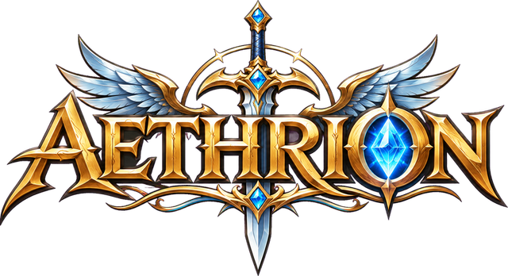
Sete heróis prenderam Vorath do outro lado da Fenda.
Agora é a sua vez de despertar no Reino.
Explore a cidade, enfrente chefes, pesque no rio, cozinhe na fogueira e encontre outros jogadores pelo caminho.
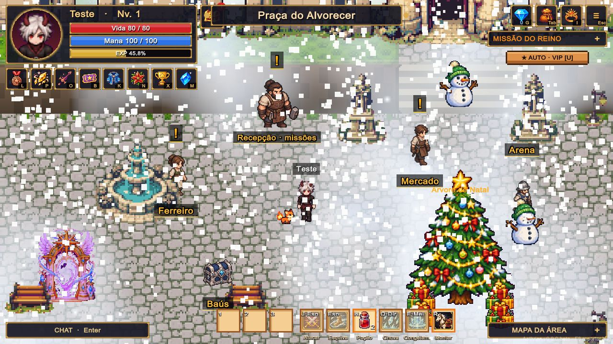
Praça, mercado, arena, florestas e labirintos cheios de monstros e segredos.
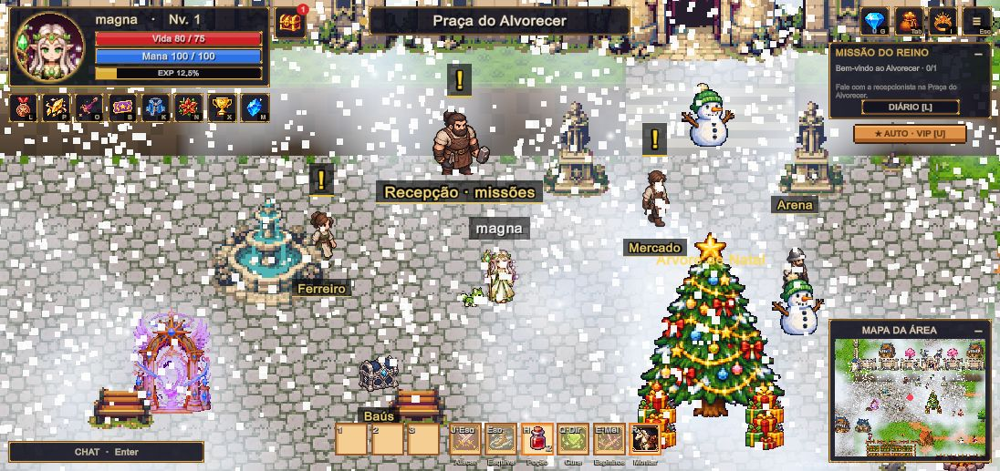
Veja outros heróis andando pelo reino, converse no chat e dispute o ranking.
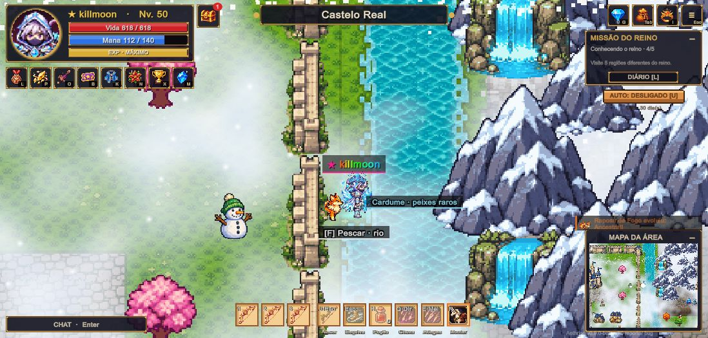
10 peixes no rio e no mar. Cozinhe pratos que dão força, vida e velocidade.
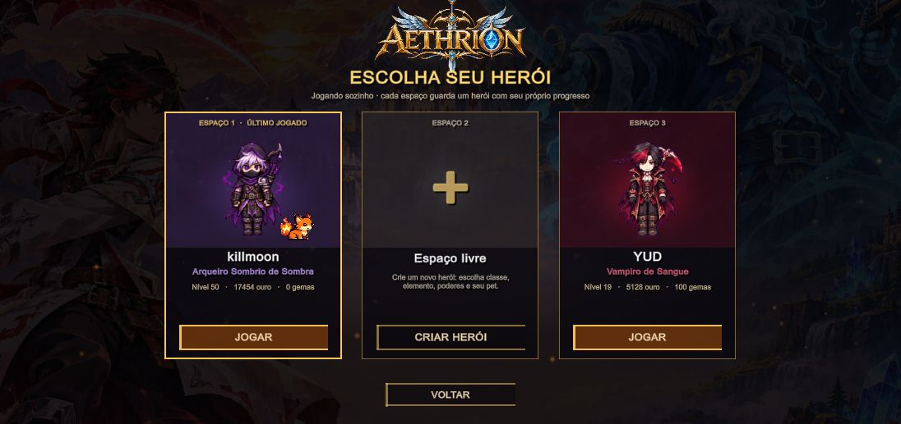
Até 3 heróis por conta, com classe, elemento e um pet que vira montaria.
Armas, pets e mantos das raridades mais altas. Na versão Steam, você pode trocar e vender os seus no Mercado da Comunidade Steam.
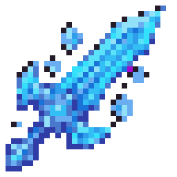
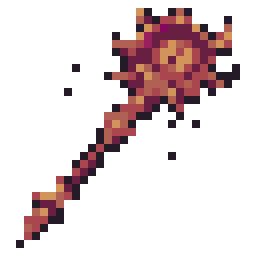
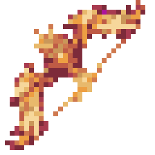
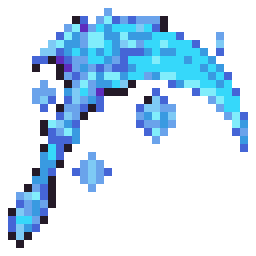
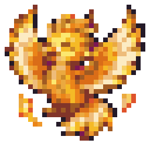
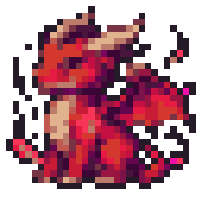
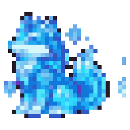
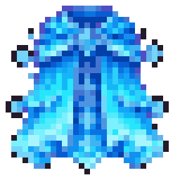
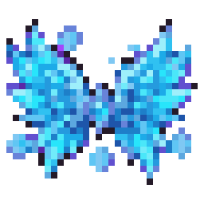
Experimente grátis agora. Quando o jogo for lançado na Steam, a versão completa traz tudo isso:
Não. Clique em “Jogar” e o jogo abre no navegador. Na primeira vez ele baixa uns 180 MB (depois fica guardado e abre mais rápido).
O jogo foi feito para computador (teclado e mouse). No celular pode até abrir, mas não é recomendado.
Sim, no próprio navegador. Se você limpar os dados do site ou trocar de navegador/computador, o progresso do navegador não vai junto.
Não. No navegador nada é vendido. VIP, passe e gemas serão vendidos só dentro da versão Steam, pelo sistema de pagamento da própria Steam.
Na versão Steam, os itens raros poderão ser trocados e vendidos no Mercado da Comunidade Steam. O valor é definido pelos próprios jogadores, e o saldo fica na carteira Steam.